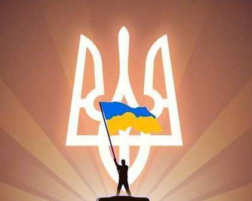

Назва "Патріот" символізує пристрасну прив'язаність клубу до своєї Батьківщини, його віру в національну силу і потенціал. Це не просто футбольна команда, а справжній амбасадор патріотизму та підтримки нашої країни. Клуб має на меті об'єднати людей, надихнути їх на досягнення високих результатів і донести повідомлення про гордість і почуття належності до нашої нації через футбол.
Така назва також викликає почуття громадської відповідальності. "Патріот" усвідомлює важливість співпраці з місцевими громадами, активно підтримує благодійні акції, спонсорує спортивні програми для дітей та молоді. Клуб також бере участь у соціальних ініціативах, підтримує важливі суспільні цінності і виступає за розвиток спорту в нашій країні.
Назва "ФК Патріот" виражає не лише сильний футбольний клуб, але й визначає його місію як представника національних цінностей, почуття гордості та прив'язаності до нашої Батьківщини. Це назва, яка надихає гравців та вболівальників.